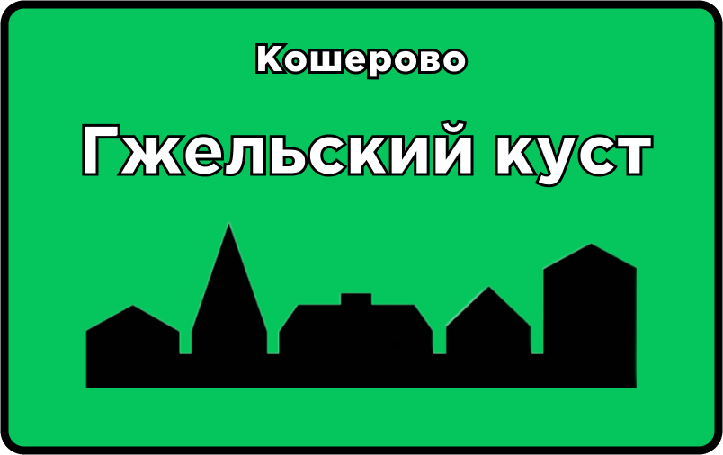
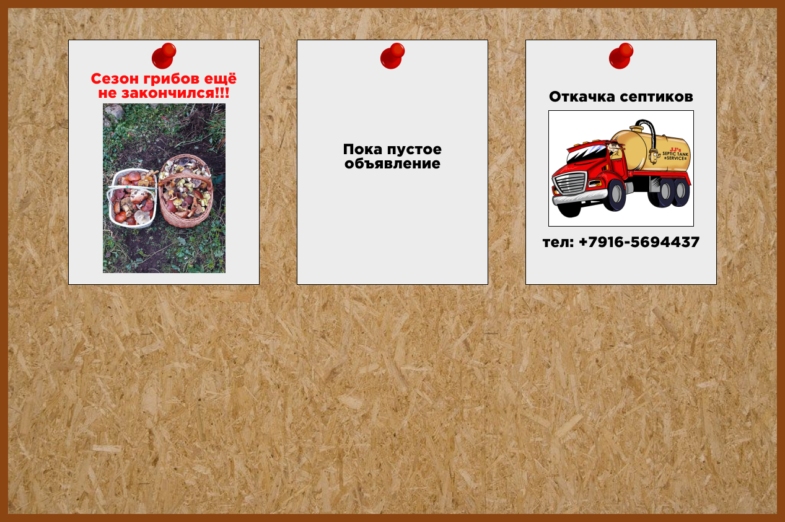

Полезная информация
Галерея
Контакты
Оставить обращение!
Доска объявлений
Кошерово

Полезная информация
Расписание электричек
Расписание автобусов
Доставка продуктов
Здесь может быть ваша реклама
Администрация
Яндекс Карты
Яндекс Карты
Доска объявлений

Контакты для разных видов
обращений
При отключении света тел: +7(495)-995-00-99
При утечке газа тел: +7(496)-464-76-63
По вопросам благоустройства деревни:
email: kosherovo_vilage@mail.ru
Контакты
По вопросам и предложениям
email: kosherovo_vilage@mail.ru
тел: +7(995)-881-35-42